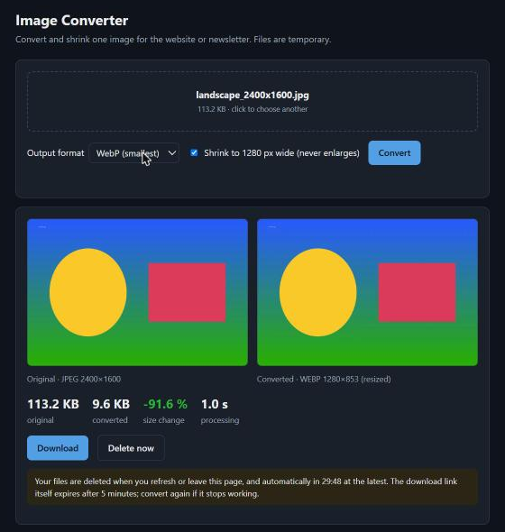
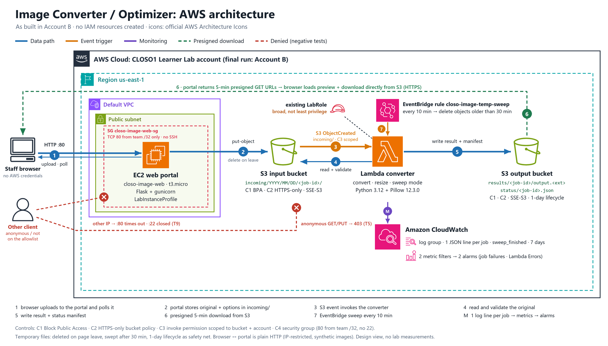
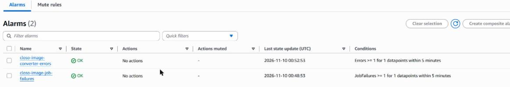
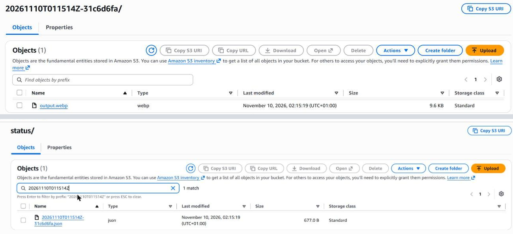
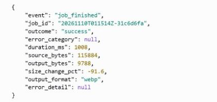

From upload to web-ready image
We built the portal for a fictional school communications team preparing images for its website and newsletter. Staff upload one JPEG or PNG, choose JPEG, PNG or WebP as the output, and can cap the width at 1280 pixels. The portal shows both versions, their dimensions and file sizes before download.


One measured conversion
In the lab, converting a 2400 × 1600 JPEG to a 1280 × 853 WebP reduced the file from 113.2 KiB to 9.6 KiB, a 91.6% reduction for that sample. The first measured job reported about 1 second of Lambda processing, with the result manifest available about 5 seconds after upload.
My contribution
Portal and converter
I built the Flask upload, preview and download experience and the Python Lambda worker for validation, conversion, resizing and metadata removal.
AWS integration and verification
I wired the S3 trigger, implemented temporary-file cleanup, configured CloudWatch monitoring, and wrote the AWS CLI scripts for deployment, verification and teardown. I also produced the architecture diagrams and technical report.
Marios led the S3 data protection, network security and access tests. We deployed, tested and presented the system together.
Event-driven architecture
The Flask portal on EC2 writes the original to a private S3 input bucket. An ObjectCreated event invokes the Python Lambda worker, which validates the image, applies EXIF orientation, converts it with Pillow, optionally resizes it and strips metadata. A separate private bucket holds the result and status manifest. The portal polls for status and returns a five-minute presigned link for a direct HTTPS download from S3.


Why we split the portal and worker
EC2 gave the team a web interface and a security-group boundary to test. S3 events moved image processing out of the web request, so Lambda could run per upload while the portal polled a small status file. Separate input and output buckets kept converted files from triggering another job.
Access, cleanup and monitoring
Both S3 buckets blocked public access, encrypted objects at rest and required HTTPS. CloudWatch recorded structured job logs and had separate alarms for recorded job failures and Lambda errors. A page refresh removed the job files in testing. EventBridge was configured to run cleanup every ten minutes for files older than 30 minutes, with a one-day S3 lifecycle rule as a fallback.


Deployment and cost
We created the S3 buckets, notification and portal security group in the AWS console. Bash scripts handled Lambda packaging, monitoring, the scheduled sweep and the EC2 portal. For continuous operation, the report estimated about $12.85 per month at the time of the lab, mostly driven by EC2, its public IPv4 address and its disk.
What the lab verified
We verified the upload trigger, portal downloads, recovery after invalid input, denial of anonymous S3 requests, and denial of portal access from outside the IP allowlist. All six format combinations were exercised locally. The AWS deployment combined scripts and console setup, and the scheduled deletion was configured but remained unobserved during the lab run.
The lab portal used HTTP and the existing Learner Lab roles. We removed the lab resources after the demo.




What I learned
When the Learner Lab session expired mid-test, a check reported a missing bucket. AWS calls to unrelated services also failed, which pointed to expired session credentials. Restarting the lab restored access to the existing resources. I would ship and test the first upload-to-download path earlier and surface the original AWS error in the check script.
What I would change for production
I would add HTTPS to the portal, give the portal and worker separate least-privilege IAM roles, and use an automated deployment that creates the full stack. I would also run a timed end-to-end cleanup test to verify that job files expire even when the browser cannot request deletion.
Project downloads
Technical documentation
Architecture, implementation, and lab verification.
Coming shortlyPresentation (PDF)
Slides from the AWS Learner Lab demonstration.
Coming shortly